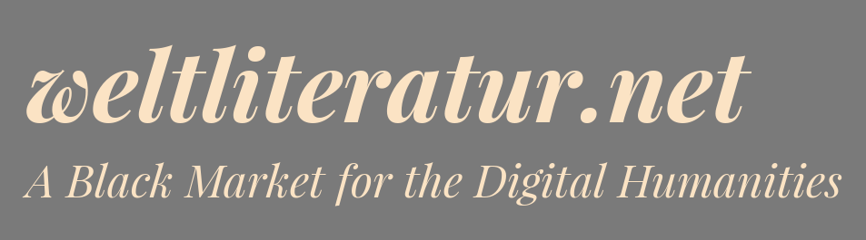

<!doctype html>
<html lang="de">
        <head>
                <meta charset="utf-8">
                <meta name="viewport" content="width=1920, height=1200, initial-scale=1.0, maximum-scale=1.5, user-scalable=no">

                <title>Datenschätze heben – Informationsverarbeitung und -analyse für die Literaturwissenschaft</title>

                <link rel="stylesheet" href="../reveal.js/css/reveal.css">
                <link rel="stylesheet" href="../reveal.js/css/theme/simple.css">

        <!-- adjustments for serif.css -->
        <link rel="stylesheet" href="custom.css">

                <!-- Theme used for syntax highlighting of code -->
                <link rel="stylesheet" href="../reveal.js/lib/css/zenburn.css">

                <!-- Printing and PDF exports -->
                <script>
                        var link = document.createElement( 'link' );
                        link.rel = 'stylesheet';
                        link.type = 'text/css';
                        link.href = window.location.search.match( /print-pdf/gi ) ? '../reveal.js/css/print/pdf.css' : '../reveal.js/css/print/paper.css';
                        document.getElementsByTagName( 'head' )[0].appendChild( link );
                </script>
        </head>
        <body>
                <div class="reveal">
                        <div class="slides">
                            <section data-markdown="" data-separator="^\n---\n" data-separator-vertical="^\n--\n" data-charset="utf-8">
<script type="text/template">


# Datenschätze heben <!-- .element: style="font-size:3em;" -->

## Informationsverarbeitung und -analyse für die Literaturwissenschaft

<br />[Robert Jäschke](https://amor.cms.hu-berlin.de/~jaeschkr/)

Humboldt-Universität zu Berlin & Forschungszentrum L3S, Hannover<!-- .element: style="font-size:0.75em;" -->

24. November 2021


<br/>
<a rel="license"
href="http://creativecommons.org/licenses/by/4.0/"></a> <br/>
Dieses Werk ist lizenziert unter einer <a rel="license" href="http://creativecommons.org/licenses/by/4.0/">Creative Commons Namensnennung 4.0 International Lizenz</a>.

<!-- .element: style="font-size:0.5em; margin-bottom: 0px" -->

---

# Einleitung

--


<small>
Quelle: [XKCD, Randall Munroe](https://xkcd.com/435) / CC BY-NC 2.5
</small>


--


--

<!-- ## Information Processing and Analytics -->

<!-- .element: style="margin-top: -20px;" -->

--

**Wie kann Data Science Bibliotheken helfen, ihre (eigenen) Daten
besser zu verstehen und neue Dienste bereitzustellen?**

## Drei Beispiele


Bibliothekskatalog<br/>
<!-- .element height="195px" -->

<!-- .element style="float:left" -->


literarische Werke<br/>
<!-- .element height="195px" -->

<!-- .element style="float:left" -->


Zeitungskorpus<br/>
<!-- .element height="195px" -->

<!-- .element style="float:left" -->


---


# Vossianische Antonomasien

<br/> zusammen mit
[Frank Fischer](https://lehkost.github.io/),¹
[Michel Schwab](https://www.ibi.hu-berlin.de/de/institut/personen/schwab)²
<br/>

¹ Freie Universität Berlin<br/>
² Humboldt-Universität zu Berlin<!-- .element: style="font-size:0.75em;" -->

<br/>

<ul>
<li class="web">[vossanto.weltliteratur.net](https://vossanto.weltliteratur.net/)
<li class="doc">Fischer, F., Jäschke, R.: ['The Michael Jordan of greatness' — Extracting Vossian antonomasia from two decades of The New York Times, 1987–2007](https://doi.org/10.1093/llc/fqy087). Digital Scholarship in the Humanities. 35, 34–42, 2019.
<li class="doc">Schwab, M., Jäschke, R., Fischer, F., Strötgen, J.: ['A Buster Keaton of Linguistics': First Automated Approaches for the Extraction of Vossian Antonomasia](https://doi.org/10.18653/v1/D19-1647). Proceedings of the 2019 Conference on Empirical Methods in Natural Language Processing. pp. 6239–6244. Association for Computational Linguistics, 2019.
</ul>

--
# Agenda

<br/>

- 🤔 Was ist eine Vossianische Antonomasie?
- 🙋 Beispiele und Spezialfälle
- ⚙ Extraktionsmethoden
- ✨ Ergebnisse
- 💬 Diskussion

<!--
 Framework zur Exploration und Analyse des DNB-Katalogs
Extraktion und Analyse Vossianischer Antonomasien
-->

---

## Was ist eine Vossianische Antonomasie? (1/4)


<!-- .element width="250px" -->

- Erstbeschreibung als eigenes Phänomen durch Gerhard Johannes Vossius (1577–1649)
- *rhetorisches Stilmittel*, um kurz und prägnant eine Person zu
  beschreiben, indem man ihr die Eigenschaft einer anderen –
  berühmteren, prototypischen – Person zuschreibt


<small>
Bildquelle: <a href="https://commons.wikimedia.org/wiki/File:Gerardus_Johannes_Vossius_(1577-1649),_by_Anonymous.jpg">Wikimedia Commons</a></small>


--


## Beispiele aus freier Wildbahn (1/4)

<br />
<!-- .element width="640px" -->

<br />
= Vittorio Hösle (Quelle: [welt.de](https://www.welt.de/politik/ausland/article120037085/Papst-ehrt-den-Boris-Becker-der-Philosophie.html), 2013)

--

## Beispiele aus freier Wildbahn (2/4)

<br />
<!-- .element width="640px" -->

<br />
= Alice Schwarzer (Quelle: [cicero.de](http://www.cicero.de/berliner-republik/alice-schwarzer-der-erich-honecker-des-feminismus/56963), 2014)

--

## Beispiele aus freier Wildbahn (3/4)

<br />
<!-- .element width="640px" -->

<br />
= Markus Lanz (Quelle: [spiegel.de](http://www.spiegel.de/kultur/tv/markus-lanz-auf-online-petition-folgt-wetten-dass-a-945188.html), 2014)

--

## Beispiele aus freier Wildbahn (4/4)

<br />
<!-- .element width="640px" -->

<br />
= Jim Koch (Quelle: [theatlantic.com](https://www.theatlantic.com/magazine/archive/2014/11/the-steve-jobs-of-beer/380790/), 2014)


--

## Was ist eine Vossianische Antonomasie? (2/4)

<br />
»Die ›Vossianische Antonomasie‹ ist […] die Setzung eines Eigennamens für ein Appellativ: der Träger des Eigennamens ist eine Person oder Sache, die in Geschichte oder Mythologie eine hervorragende Realisierung der mit dem Appellativ bezeichneten Eigenschaft war. Die hervorragende Person oder Sache ist der Typus […], der sich in der bezeichneten neuen Realisierung wiederfindet. Meist wird der Typus durch <em>ein untypologisches, aktualisierendes Signal</em> (Pronomen, Adjektiv, Genitiv), in jedem Falle durch den (sprachlichen oder situationsmäßigen) Kontext aus der typologischen Ferne in die zu bezeichnende Gegenwart geholt […].«

<br />
<small>
Heinrich Lausberg: *Handbuch der literarischen Rhetorik. Eine Grundlegung der Literaturwissenschaft.* Band 2. München: Hueber 1960. §581, S. 301. [[diese Seite in der 3. Auflage 1990 bei Google Books](https://books.google.com/books?id=IR8ru0joFKcC&pg=PA301); Hervorhebung von uns]
</small>


--


## Was ist eine Vossianische Antonomasie? (3/4)

- Subphänomen der klassischen ›Antonomasie‹
- morphosyntaktische Auffälligkeiten: Eigennamen erscheinen prädikativ (wie bei der Deonymisierung); Artikelgebrauch vor Eigenname
- Funktionsweise: »bestimmte als salient begriffene Eigenschaften oder Charakteristika des ursprünglichen Namenträgers [werden] auf ein anderes Referenzobjekt übertragen« ([Thurmair 2020](https://doi.org/10.1515/9783110685886-012))

<!-- .element width="50%" -->

- <span class="vasource">Source</span> → <span
  class="vamodifier">Modifier</span> → <span
  class="vatarget">Target</span> (vgl. [Bergien 2013](http://onomasticafelecan.ro/iconn2/proceedings/1_01_Bergien_Angelika_ICONN_2.pdf))
- <span class="vatarget">Bill Gates</span>, der <span
  class="vasource">Henry Ford</span> des <span
  class="vamodifier">Computerzeitalters</span>


--

## Was ist eine Vossianische Antonomasie? (4/4)

- Begriff ›Vossianische Antonomasie‹ international kaum verwendet
- stattdessen etwa Unterscheidung zwischen *Antonomasia<sub>₁</sub>*
  und *Antonomasia<sub>₂</sub>*:
  <br/>
  *metonymic* vs. *metaphorical antonomasia*
  <br/>
  (hier wäre unsere Vossanto ein Spezialfall von
  *Antonomasia<sub>₂</sub>*, nämlich wenn es um »comparisons with
  paragons from other spheres of culture« geht: »Lyotard is a pope
  of postmodernism, Bush is no Demosthenes; and we can buy the
  Cadillac of vacuum cleaners.«, vgl. Holmqvist/Płuciennik 2010)
- wir kürzen ›Vossianische Antonomasie‹ als **Vossanto** ab

--

## Wesen und Funktion der Vossanto

- Entitäten können sowohl als <span class="vasource">Source</span>
  als auch als <span class="vatarget">Target</span> auftreten,
  z.B. Obama: bis 2011 war er vor allem <span
  class="vatarget">Target</span> und wurde danach immer mehr <span
  class="vasource">Source</span> (Bergien 2013)
- eine Funktion der Vossanto ist die *Inkulturation*, d.h. wir erhöhen
  das <span class="vatarget">Target</span> durch eine Referenz auf
  die <span class="vasource">Source</span> und das <span
  class="vamodifier">aktualisierende Signal</span>:
  > »If we refer to
  > Leonard Cohen as the Lord Byron of rock music, we treat a popular
  > singer as a famous romantic poet elevating him and popular songs to
  > a higher level of culture.«
  > <footer>(Holmqvist/Płuciennik 2010)</footer>
- ebd. heißt es aber auch: **»Antonomasia is essentially humanistic
  and anti-computational.«** – d.h., ohne kulturelles
  Hintergrundwissen könne man eine Vossanto nicht verstehen
- insgesamt oszilliert die Vossanto zwischen Erläuterungshilfe und
  ironischem Kommentar; die Erläuterungsfunktion kann aber auch
  negative Effekte haben: »Nichts ist banaler als dieses ewige ›Ute
  Lemper ist die Marlene Dietrich von heute‹, ›Hansjörg Felmy war der
  deutsche Humphrey Bogart‹. Das stimmt nie.« (Fritz J. Raddatz, [*Die
  Zeit*
  44/2007](http://www.zeit.de/2007/44/L-Augustin/komplettansicht))


---

# Beispiele und Spezialfälle

## zwei häufige Klassen von <span class="vamodifier">Modifiern</span>:

- **temporal** *(his/her/our day/time/generation/era, today, the (19)90's, the 19th century)*
   - »<span class="vatarget">She</span> is not the <span class="vasource">Laurie Anderson</span> of <span class="vamodifier">her time</span>, of course.«   <p></p>
- **lokal** *(Japan, China, Brazil, Iran, Mexico, Israel, India, South Africa, Poland, Spain)*
   - »<span class="vatarget">Mr. Cybulski</span>'s performance, full of cynical bravado, established him as the <span class="vasource">James Dean</span> of <span class="vamodifier">Poland</span>.«

(dann eher Metonymie statt Metapher)

--

## Übung

- **Ziele**:
   - Reichhaltigkeit von Vossantos erfahren
   - Kategorien ("Dimensionen") identifizieren
- **Aufgabe**: Kategorisierung von Beispielsätzen
   - beispielhafte Ideen für Kategorien: *mehrfach-Vossanto/Source/Modifier, hypothetisch, erklärt, Negation, Art der Source/des Targets, Plural, temporal, ...*
- **Vorgehen**:
   - pro Gruppe 4-8 Sätze
   - gemeinsames "Whiteboard" zur Ergebnissicherung

<!-- .element style="width:600px;box-shadow:none;margin:0px;" -->

---

# Methoden

Ziel: automatische Extraktion aus großen Zeitungskorpora

1. Regelbasiert ([Fischer/Jäschke 2019](https://doi.org/10.1093/llc/fqy087))
2. Automatisierte Verfahren ([Schwab et al. 2019](https://doi.org/10.18653/v1/D19-1647))
   1. Wikidata
   2. NER
   3. BLSTM

Korpus: »New York Times« 1987–2007 ([Sandhaus 2008](https://catalog.ldc.upenn.edu/LDC2008T19))

--

## Mitmachen und Nachvollziehen

→ Jupyter Notebook auf Google  <!-- .element style="height:1.5em;box-shadow:none;margin:0px;vertical-align:-.35em" --> Colaboratory

--

## 1. Regelbasiert

1. Fokus auf das häufigste Muster *"the <span
   class="vasource">Source</span> of <span
   class="vamodifier">Modifier</span>"*:
  ```python
  re.compile("(\\bthe\\s+([\\w.,'-]+\\s+){1,5}?of\\b)", re.UNICODE)
  ```
   - später Ergänzung um weitere Muster (*"a/an/the <span
   class="vasource">Source</span> of/for/among <span
   class="vamodifier">Modifier</span>"*)
2. Liste von Namen und Aliasen [aller Instanzen der Klasse "human"](https://query.wikidata.org/#%20%20SELECT%20%3Fitem%20%3FitemLabel%20WHERE%0A%20%20%7B%0A%20%20%20%20%3Fitem%20wdt%3AP31%20wd%3AQ5%20.%20%20%20%20%20%20%20%20%20%20%20%20%20%20%20%20%20%20%23%20instance%20of%20human%0A%20%20%20%20SERVICE%20wikibase%3Alabel%20%7B%20%20%20%20%20%20%20%20%20%20%20%20%20%20%20%23%20...%20include%20the%20labels%0A%20%20%20%20%20%20bd%3AserviceParam%20wikibase%3Alanguage%20%22en%22%0A%20%20%20%20%7D%0A%20%20%7D%0A) aus Wikidata
   - Abgleich des Textes zwischen *"the"* und *"of"* gegen diese Liste
3. iterative Erstellung einer [Sperrliste von mehrdeutigen Source-Namen](https://github.com/weltliteratur/vossanto/blob/master/theof/blacklist.tsv)
   - Ignorieren von Kandidaten, deren <span class="vasource">Source</span> in der Sperrliste enthalten ist


→ Anzahl der Kandidaten für das Jahr 1987 reduzierte sich von 641,432 über 5,236 zu 131.

--

## 2.a Wikidata

- Schritte 1 + 2 wie gehabt
- in Schritt 3 Ersetzung der Sperrliste durch automatisierte Verfahren:<br/>
   Bekanntheitsmaß + Entitätenfilter

--

### Bekanntheitsmaß

- Widerspiegelung der *Bekanntheit* der Entitäten
- → Anzahl der [Sitelinks](https://wikidata.org/wiki/Help:Sitelinks) in Wikidata
- Entität der Klasse "human" vs. bekannteste Entität
- Beispiel: *"the <span class="vasource">House</span> of <span class="vamodifier">Creativity</span>"*

  | Entität | Sitelinks |
  |:--------|----------:|
  |[House](https://www.wikidata.org/wiki/Q3947) (Gebäude) | 184 |
  |[Dr. House](https://www.wikidata.org/wiki/Q23558) (TV Serie)| 79 |
  |[Homer Doliver House](https://www.wikidata.org/wiki/Q3139666) (Botaniker) | 9|

  <!-- .element style="width:600px;box-shadow:none;margin:0px;" -->

→ Wir behalten Kandidaten, deren Entität der Klasse "human" die bekannteste Entität  ist.

--

### Entitätenfilter

- Problem: Was passiert mit Fällen wie *"the <span class="vasource">Prince</span> of Spain"*?

  | Entität | Sitelinks |
  |:--------|----------:|
  | [Prince](https://www.wikidata.org/wiki/Q7542) (Sänger) | 101|
  | [Prince](https://www.wikidata.org/wiki/Q2747456) (Sohn eines Königs/einer Königin) | 71|
  <!-- .element style="width:600px;box-shadow:none;margin:0px;" -->
- → Abgleich zwischen <span class="vasource">Source</span> + Folgewörtern im Satz (z.B. *Prince of Spain*) gegen Wikidata-Entitäten-Liste
- *Prince of Wales, Streets of New York, Baths of Caracalla*

--

## 2.b NER

1. wie gehabt
2. Anwendung von *Named-Entity-Recognition (NER)*
   - z.B. Stanford NLP
   - Wörter zwischen "a/an/the" und "of/for/among" müssen als *Person* getagged werden
3. Entitätenfilter (aus Wikidata-Ansatz)

Beispiel: *»the ('O') <span class='vasource'>Marquis ('Person') de
('Person') Sade ('Person')</span> of ('O')«*


--

## 2.c BLSTM (1/2)

1. (binäre) Annotation der Daten auf Satzebene = Trainingsdaten
   - 6072 Sätze, davon 3023 mit Vossantos
2. Repräsentation der Wörter durch *Word Embeddings* ([GloVe](https://github.com/stanfordnlp/GloVe), [Pennington et al. 2014](https://www.aclweb.org/anthology/D14-1162))

<!-- .element style="width:400px;box-shadow:none;" -->

--

## 2.c BLSTM (2/2)

1. Eingabe: Satz
2. Repräsentation des Satzes als Matrix mit Hilfe der Wortvektoren
3. BLSTM = *bidirectional Long Short-Term Memory* ([Schuster/Paliwal 1997](https://doi.org/10.1109/78.650093))
   - Vorteil: "Erinnerung" vorheriger Werte
   - bidirektional: in beide Richtungen
4. Zusammenführen der Ausgabevektoren
5. Ausgabe: binär (1, 0)

<!-- .element style="width:300px;box-shadow:none;" -->


---

# Ergebnisse


## Häufigkeit der Muster

| | of | for | among | Summe |
|--------:|------:|----:|------:|------:|
| **the** | 2,779 | 24 | 3 | 2,806 |
| **a** | 118 | 59 | 13 | 190 |
| **an** | 14 | 13 | 0 | 27 |
| **Summe** | 2,911 | 96 | 16 | 3,023 |

<small>
Anzahl der Vossantos pro Muster<br/>
(nach manueller Annotation der durch den regelbasierten Ansatz
gefundenen Kandidaten)
</small>

--

## Häufigkeit der Muster

|Muster | Regex | Wikidata | Sperrliste | Vossantos|
|:-:|-:|-:|-:|-:|
|the-of | 12,748,735 | 90,712 | 3,591 | 2,779|
|a-of | 5,900,839 | 11,860 | 705 | 118|
|an-of | 956,247 | 4,539 | 88 | 14|
|the-for | 2,960,459 | 8,070 | 817 | 24|
|a-for | 1,869,946 | 4,812 | 536 | 59|
|an-for | 304,529 | 1,424 | 296 | 13|
|the-among | 122,345 | 139 | 13 | 3|
|a-among | 67,019 | 82 | 25 | 13|
|an-among | 11,158 | 12 | 1 | 0|
|**Summe** | 24,941,277 | 121,650 | 6,072 | 3,023|


<small>Anzahl der Vossanto-Kandidaten nach jedem Schritt beim regelbasierten Verfahren</small>


--

## Güte der Verfahren

|Ansatz|Precision|Recall|F1-Maß|
|:-|-:|-:|-:|
|Regelbasiert|49.8%|-|-|
|Wikidata|67.3%|**93.0%**|78.1%|
|NER|71.8%|81.3%|76.2%|
|BLSTM|**86.9%**|85.3%|**86.1%**|

Güte der automatisierten Ansätze basiert auf den Ergebnissen des regelbasierten Ansatzes!


--

## Schwierigkeit des Tasks

- Annotation von 200 zufällig gewählten Sätzen durch je drei Crowdworker
- Cohen's Kappa von 0.72 zwischen Experte und Crowdworkern:
   - Experte lag (nach Überprüfung) bei den 28 strittigen Fälle richtig
- damit Crowdsourcing Accuracy von 86%

<br/>

## Recall

- keine echte Evaluation möglich bei 1.8 Millionen Artikeln
- in Zufallsstichprobe von 105 Artikeln fanden wir eine Vossanto

--


## zeitliche Verteilung

<!-- .element width="70%" -->

--

## häufige Sources


<!-- .element: style="float:right; width: 177px;box-shadow:none" -->

| Anzahl | Source |
|-----:|:------------------------|
| 72 | [Michael Jordan](https://www.wikidata.org/wiki/Q41421) |
| 62 | [Rodney Dangerfield](https://www.wikidata.org/wiki/Q436386) |
| 40 | [Johnny Appleseed](https://www.wikidata.org/wiki/Q369675) |
| 36 | [Elvis Presley](https://www.wikidata.org/wiki/Q303) |
| 36 | [Babe Ruth](https://www.wikidata.org/wiki/Q213812) |
| 25 | [Michelangelo](https://www.wikidata.org/wiki/Q5592) |
| 25 | [Donald Trump](https://www.wikidata.org/wiki/Q22686) |
| 23 | [Pablo Picasso](https://www.wikidata.org/wiki/Q5593) |
| 23 | [Bill Gates](https://www.wikidata.org/wiki/Q5284) |
| 23 | [Madonna](https://www.wikidata.org/wiki/Q1744) |
| 21 | [Jackie Robinson](https://www.wikidata.org/wiki/Q221048) |
| 20 | [P. T. Barnum](https://www.wikidata.org/wiki/Q223766) |
| 20 | [Tiger Woods](https://www.wikidata.org/wiki/Q10993) |
| 19 | [Martha Stewart](https://www.wikidata.org/wiki/Q234606) |
| 17 | [William Shakespeare](https://www.wikidata.org/wiki/Q692) |
| 17 | [Wolfgang Amadeus Mozart](https://www.wikidata.org/wiki/Q254) |
| 17 | [Cinderella](https://www.wikidata.org/wiki/Q13685096) |
| 16 | [Henry Ford](https://www.wikidata.org/wiki/Q8768) |
| 16 | [John Wayne](https://www.wikidata.org/wiki/Q40531) |
| 15 | [Napoleon](https://www.wikidata.org/wiki/Q517) |

--

## zeitliche Verteilung der Sources

<!-- .element width="80%" -->

--

## »the Michael Jordan of«

<small>
…, 12th men, actresses, Afghanistan, Australia, baseball, BMX racing,
boxing, Brazilian basketball for the past 20 years, bull riding,
college coaches, computer games, cricket, cyberspace, dance, diving,
dressage horses, fast food, figure skating, foosball, football, game
shows, geopolitics, golf, Harlem, her time, his day, his sport, his
team, his time, hockey, horse racing, hunting and fishing, Indiana,
integrating insurance and health care, julienne, jumpers, language,
Laser sailing, late-night TV, management in Digital, Mexico, motocross
racing in the 1980's, orange juice, real-life bulls, recording,
Sauternes, snowboarding, soccer, television puppets, tennis, the
Buffalo team, the dirt set, the Eagles, the game, the Hudson, the
National Football League, the South Korean penal system, the sport,
the White Sox, this sport, women's ball, women's basketball
</small>

* »Romario is the **Michael Jordan** of soccer and Bebeto is the Magic Johnson of soccer« ([1994](http://www.nytimes.com/1994/07/05/sports/world-cup-94-point-proved-hearts-heavy-it-s-time-to-go-home.html))
* »Bonfire, the **Michael Jordan** of dressage horses« ([1998](http://www.nytimes.com/1998/11/05/sports/horse-show-national-thrives-again-with-garden-as-setting.html))
* »Brian Foster, the **Michael Jordan** of BMX racing« ([1998](http://www.nytimes.com/1998/12/27/sports/1998-in-review-champions-all-and-all-in-anonymity.html))
* »The stunt biker Dave Mirra, the **Michael Jordan** of the dirt set« ([2000](http://www.nytimes.com/2000/08/13/weekinreview/this-is-extremely-sporting.html))
* »Cynthia Cooper is the **Michael Jordan**, the Larry Bird, the Magic Johnson of this league« ([2000](http://www.nytimes.com/2000/08/28/sports/sports-of-the-times-cooper-leaving-behind-a-legacy-of-greatness.html))
* »McNabb has been called the **Michael Jordan** of the National Football League« ([2001](http://www.nytimes.com/2001/01/08/sports/on-pro-football-mcnabb-on-the-run-from-start-to-finish.html))


> Barack Obama: »There is a reason you call someone the Michael Jordan
> of [something]. They know what you’re talking about because Michael
> Jordan is the Michael Jordan of greatness. He is the definition of
> somebody so good at what they do that everybody recognizes it.
> That’s pretty rare.«
> <footer>([Washington Post, 22.11.2016](https://wapo.st/2fD96iF))</footer>


--

## häufige Modifier

- **Zeiten** *(his/her/our day/time/generation/era, today, the
  (19)90's, the 19th century)*
- **Länder** *(Japan, China, Brazil, Iran, Mexico, Israel, India, South
  Africa, Poland, Spain)*
- **Sportarten** *(tennis, baseball, hockey, basketball, golf,
  football, racing, soccer, sailing)*
- **Kultur** *(the art world, ballet, jazz, fashion, hip-hop, dance,
  wine, salsa, juggling)*
- [mehr auf vossanto.weltliteratur.net](https://vossanto.weltliteratur.net/emnlp-ijcnlp2019/statistics.html#modifiers)

<!-- .element: style="float:right; width: 40%" -->


| Anzahl | Modifier |
|------:|:-----------------|
| 56 | his day |
| 34 | his time |
| 29 | Japan |
| 17 | China |
| 16 | tennis |
| 16 | his generation |
| 16 | baseball |
| 14 | her time |
| 13 | our time |
| 13 | her day |
| 12 | the Zulus |
| 11 | the 90's |
| 11 | the 1990's |
| 11 | politics |
| 11 | hockey |
| 10 | the art world |
| 10 | Brazil |
| 10 | basketball |
| 10 | ballet |
| 9 | jazz |


--

## Vossanto-Verteilung in Rubriken

| Vossantos | Vossantos | Rubrik | Artikel | Artikel |
|-:|-:|:-|-:|-:|
| 381 | 12.6% | Sports Desk | 174,823 | 9.4% |
| 222 | 7.4% | Metropolitan Desk | 237,896 | 12.8% |
| 220 | 7.3% | Book Review Desk | 32,737 | 1.8% |
| 180 | 6.0% | National Desk | 143,489 | 7.7% |
| 171 | 5.7% | The Arts/Cultural Desk | 38,136 | 2.1% |
| 169 | 5.6% | Arts and Leisure Desk | 27,765 | 1.5% |
| 135 | 4.5% | Magazine Desk | 25,433 | 1.4% |
| 125 | 4.1% | Editorial Desk | 131,762 | 7.1% |
| 117 | 3.9% | Cultural Desk | 40,342 | 2.2% |
| 99 | 3.3% | Movies, Performing Arts/Weekend Desk | 13,929 | 0.8% |
| 96 | 3.2% | Business/Financial Desk | 112,951 | 6.1% |
| 90 | 3.0% | Foreign Desk | 129,732 | 7.0% |
| 78 | 2.6% | Weekend Desk | 18,814 | 1.0% |
| 74 | 2.5% | Leisure/Weekend Desk | 10,766 | 0.6% |
| 72 | 2.4% | Long Island Weekly Desk | 20,453 | 1.1% |
| 69 | 2.3% | Style Desk | 21,569 | 1.2% |
| 57 | 1.9% | Financial Desk | 206,958 | 11.2% |
| 44 | 1.5% | Arts &amp; Leisure Desk | 6,742 | 0.4% |
| 42 | 1.4% | The City Weekly Desk | 22,863 | 1.2% |
| 41 | 1.4% | Connecticut Weekly Desk | 17,034 | 0.9% |


--

## Tiere als *Target*

* »A rugged cat, in a fluffy sort of way,
  **[Morris](https://en.wikipedia.org/wiki/Morris_the_Cat)** has been
  the Clark Cable of the catnip crowd.«
  ([1988](http://www.nytimes.com/1988/05/29/business/luring-56-million-ailurophiles.html?pagewanted=all))
* »**[Sea Hero](https://en.wikipedia.org/wiki/Sea_Hero)** is the Bobo
  Holloman of racing«
  ([1993](http://www.nytimes.com/1993/08/18/sports/sports-of-the-times-the-derby-is-history-to-sea-hero.html))
* »**<a href="https://en.wikipedia.org/wiki/Bonfire_(horse)">Bonfire</a>**,
  the Michael Jordan of dressage horses«
  ([1998](http://www.nytimes.com/1998/11/05/sports/horse-show-national-thrives-again-with-garden-as-setting.html))

<br />
## Plüschtiere als *Source*

* »Jean-Claude Van Damme, the **[Energizer
  Bunny](https://en.wikipedia.org/wiki/Energizer_Bunny)** of action
  stars, just never stops trying.«
  ([1994](http://www.nytimes.com/1994/09/11/movies/the-annotated-calendar-film.html))

--

## Nicht individualisierbare Referenzen

<br />
* »the [God, King, Queen, Satan, Emperor, Oracle, Shogun, Czar, Sultan, Buddha] of«

<br />
<br />

## Mythologische und fiktive Figuren

<br />
* »the [Santa Claus, Midas, Godzilla, Pied Piper, Energizer Bunny, Jupiter, Icarus] of«

--

## Oszillieren zwischen *Target* und *Source*

<br />
* »**Even [Michael] Jordan isn’t always Jordan.** The last time he
  retired, to play baseball, the Chicago Bulls’ owner, Jerry
  Reinsdorf, called him the **Babe Ruth** of basketball.« ([NYT,
  17.01.1999](http://www.nytimes.com/1999/01/17/weekinreview/ideas-trends-they-re-sort-of-like-mike.html))
* Bergien 2013 bringt als Beispiel Barack Obama, dessen Name ab 2011
  seltener als <span class="vatarget">Target</span> vorkommt: »the
  name Obama has changed from a target into a source name« (S. 23)
* das Oszillieren von Entitäten zwischen <span
  class="vatarget">Target</span> und <span
  class="vasource">Source</span> verdient es, auf breiterer Datenbasis
  studiert zu werden

--

## Individuelle Person/Figur als Source, Firma/Verein/Band/Ort als Target

<br />
* »**Sturm, Ruger** is the **Benedict Arnold** of the gun industry,« said Aaron S. Zelman, owner of the Patriot Distribution Company, a Milwaukee-based concern that sells a semiautomatic pistol as well as products such as assault vests and tear gas.« ([1989](http://www.nytimes.com/1989/07/14/us/gun-import-ban-enriches-small-us-arms-makers.html?pagewanted=all))
* »Also on hand is **Aerosmith**, the **Dorian Gray** of rock bands, to serve the same purpose Alice Cooper did in the first film.« ([1993](http://www.nytimes.com/1993/12/10/movies/review-film-it-s-wayne-and-garth-schwinging-once-again.html))
* »**Bolt Beranek &amp; Newman** has been the **Forrest Gump** of high technology, […]« ([1995](http://www.nytimes.com/1995/07/17/business/innovator-is-leaving-the-shadows-for-the-limelight.html))
* »For most of this century, the **Hudson** has been the **John Barrymore** of rivers, noble in profile but a sorry wreck.« ([1996](http://www.nytimes.com/1996/07/05/arts/happy-trails-along-the-hudson.html))
* »the **National Collegiate Athletic Association**, the **Kenneth Starr** of sports« ([1998](http://www.nytimes.com/1998/04/05/sports/backtalk-a-few-parting-shots-for-the-rangers-brass.html))

--

## ... und ein Favorit

<!-- .element height="300px" -->
<!-- .element height="300px" -->

»When we introduced Word in October 1983, in its first incarnation it
was dubbed the **Marquis de Sade** of *word processors*, which was not
altogether unfair.«
([1993](http://www.nytimes.com/1993/09/26/business/sound-bytes-to-this-microsoft-executive-the-suite-smells-of-success.html))

<small>
Bildquelle:
[Wikimedia
Commons](https://en.wikipedia.org/wiki/Marquis_de_Sade#/media/File:Marquis_de_Sade_portrait.jpg),
[Nathan Toasty](http://toastytech.com/guis/word115.html)
</small>


---

# Diskussion

## Fazit

- regelbasiertes Verfahren: einfach aber robust, Nachvollziehbarkeit für
  Nicht-Expert:innen
- BLSTM: State-of-the-Art-Ansatz automatisiert Finden auf neuen Korpora
- größte (bis dato) bekannte Sammlung an Vossianischen Antonomasien
- zahlreiche neue Spezialfälle, bei denen beispielsweise das <span
  class="vatarget">Target</span> keine Person ist (z.B. *the John
  Barrymore of rivers*, *the Forrest Gump of high technology* oder *the
  Marquis de Sade of word processors*)

--

## Einschränkungen

- <span class="vasource">Source</span> vom Typ "human"
- syntaktische Varianten, z.B.
   - *"the <span class="vamodifier">ADJECTIVE</span> <span class="vasource">ENTITY</span>"* (*"the <span class="vamodifier">new</span> <span class="vasource">Michael Jordan</span>"*)
   - *"the <span class="vasource">ADJECTIVE/NOUN</span> sort/version/equivalent of"* ("*<span class="vatarget">New South Wales</span>, the <span class="vamodifier">Georgian</span> equivalent of <span class="vasource">deep space</span>"*, *"an <span class="vamodifier">adult</span> version of <span class="vasource">capture the flag</span>"*)
- Fokus auf Englisch, andere Sprachen deutlich schwieriger
   - z.B. Deutsch wegen geschlechtsspezifischer Artikel und großer Vielfalt an Präpositionen

--

## Erfolglose alternative Ansätze

- geringe Ähnlichkeit (mittels Word Embedding) zwischen <span class="vasource">Source</span> und <span class="vamodifier">Modifier</span>
   - zu viele neutrale <span class="vamodifier">Modifier</span> wie *"his time"* oder Sub-Genres der <span class="vasource">Source</span> wie *"the Tiger Woods of micro golf"*
- Kandidaten entfernen, deren <span class="vasource">Source</span> in WordNet enthalten aber nicht als 'person' annotiert ist
   - *"wife"*, *"chancellor"*, etc. als 'person' in WordNet enthalten

--
## Potential für NLP

- maschinelle Übersetzung, Fact Extraction (*"Today, the German Ronaldo quit his career."*)
- Disambiguation von Entitäten und Koreferenz-Auflösung (*"Jimmy
  Johnson is the Madonna of college football ..."*)
- kreative Texterzeugung (Überschriften von Spielberichten, Aufwerten von automatisch generierten Artikeln)

--

## Ausblick

- Language Models, z.B. BERT, FLAIR, etc.
- Erkennung aller Vossanto-Teile (<span class="vasource">Source</span>, <span class="vamodifier">Modifier</span>, <span class="vatarget">Target</span>) auf Wort-Ebene
   - Sequence Tagging statt binärer Klassifikation
   - Koreferenz-Auflösung für <span class="vatarget">Target</span>
- weitere Sprache(n), z.B. Deutsch

--


<!-- .element width="80%" -->

https://vossanto.weltliteratur.net/timeline/


--

<!--

qrencode -s15 -o images/qrcode.png "https://slides.igada.de/2021-11-24-lmu/"

-->

<div style="float:right; width:24%;">
  <a href="https://slides.igada.de/2021-11-24-lmu/"></a>

  <p style="font-size:.45em;padding-top:0px;margin-top:0px;">
    <a href="https://slides.igada.de/2021-11-24-lmu/">https://slides.igada.de/2021-11-24-lmu/</a>
  </p>

  <a href="https://www.bibsonomy.org/"></a>

  <a href="http://weltliteratur.net/"></a>


</div>


<!-- .element: style="width:100%;margin-bottom:0px;" -->

<!-- .element: style="width:70%;margin-bottom:0px;margin-top:0px;" -->

<small>
Quelle: [XKCD, Randall Munroe](https://xkcd.com/1256) / CC BY-NC 2.5
</small>

<!-- .element: style="margin-top:0px;" -->


<ul>
<li class="clap">Dank an
  [Frank Fischer](https://lehkost.github.io/) und
  [Michel Schwab](https://www.ibi.hu-berlin.de/de/institut/personen/schwab)
<li class="mail"> [robert.jaeschke@hu-berlin.de](mailto:robert.jaeschke@hu-berlin.de)
<li class="web">https://hu.berlin/RJ
</ul>


<!-- .element: style="width: 70%; float:left;" -->


---

# Framework zur Exploration und Analyse des DNB-Katalogs

<br/>
zusammen mit
[Frank Fischer](https://lehkost.github.io/)<br/>

Freie Universität Berlin<!-- .element: style="font-size:0.75em;" -->

<br/>
gesamter Vortrag: [Liebe und Tod in der Deutschen
Nationalbibliothek](https://lehkost.github.io/slides/2018-koeln/)<br/> DHd
Köln, 1. März 2018

--

## Ziele und Ausgangslage

- Nutzbarmachung von Katalogmetadaten zur Bearbeitung konkreter
  Forschungsfragen
- einfaches Framework, um verschiedene Aspekte des DNB-Katalogs zu
  untersuchen
- Datendienst der DNB: http://www.dnb.de/datendienst – dritteljährlicher Komplettabzug der Katalogdaten im RDF-Format (CC0-Lizenz 😊)
- »Titeldaten der DNB«: 14 102 309 Datensätze und 227 212 707 Tripel (»Fakten«)
- **~ 180 000** Romane (laut [»rdau:P60493«](http://www.rdaregistry.info/Elements/u/#P60493), Label: »has other title information«)
- Angabe zu Autor&#42;innen durch die numerische GND-Kennung ermöglicht Verknüpfung der Daten mit u.a. Wikidata
  ```xml
  <dcterms:creator rdf:resource="http://d-nb.info/gnd/118540238"/>
  ```


<!-- .element: style="box-shadow: none; height: 100px;" -->

<!-- .element: style="box-shadow: none; height: 100px" -->


--

## Framework

<!-- .element width="1040px" -->

alle Schritte im
[GitHub-Repository](https://github.com/weltliteratur/dnb) dokumentiert


--

## Subdatensätze

<!-- .element width="640px" -->

--

## Häufigste Substantive in Romantiteln

<br />

| Substantiv | Frequenz |
|:--|--:|
| Liebe | 3 117 |
| Mann | 1 906 |
| Frau | 1 686 |
| Tod | 1 537 |
| Nacht | 1 505 |
| Leben | 1 496 |
| Welt | 1 188 |
| Haus | 1 158 |
| Zeit | 1 037 |
| Schatten | 1 029 |

<br />
<small>Häufigste Substantive in Romantiteln im gesamten DNB-Katalog.</small>

--

## Häufigste Trigramme in Titeln

<br />

| Trigramm | Frequenz |
|:--|--:|
| Das Geheimnis der | 238
| Das Haus der | 224
| Der Mann der | 189
| Das Geheimnis des | 175
| Die Tochter des | 160
| Im Schatten des | 128
| Der Mann im | 128
| Das Lied der | 125
| Die Frau des | 124
| Die Reise nach | 108

<br />
<small>Häufigste Trigramme in Romantiteln im DNB-Katalog.</small>

--

## Romanumfänge

<!-- .element width="640px" -->

<small>Anzahl der Bücher pro Seitenanzahl im Umfangsbereich 200 bis 400 Seiten.
<br/><br/>
**Publikumsfrage:** Es gibt einen Peak aller 16 Seiten, weil …</small>

--

## Entwicklung des Romanumfangs seit 1913

<!-- .element width="640px" -->

<small>Entwicklung der mittleren Seitenanzahl pro Jahr seit 1913. – Scheint eine Vermutung von Helge Malchow zu bestätigen: »Mit dem Einzug des Computers in den Schreibprozess sind die Romane nach meinem Eindruck im Durchschnitt um zehn Prozent länger geworden.« ([*Die Zeit* 47/2012](http://www.zeit.de/2012/47/Buecher-Internet-Literatur-Verleger/komplettansicht))</small>

--

## Lessons learned

- Bibliothekskataloge sind interessant und können sogar einige
  Überraschungen enthalten
- einfache Kommandozeilenwerkzeuge und Programmierkenntnisse reichen
- reichhaltige Ergebnisse basierend auf einer nur sehr kleinen Auswahl an Metadatenfeldern
- **Bibliotheken**: Ausgangspunkt für die interaktive Exploration des Katalogs

---

# Was ist wichtig? Schlüsselstellen in der Literatur

<br/>

[DFG-Projekt](https://www.projekte.hu-berlin.de/de/schluesselstellen) (04/2020 – 03/2023)<br/> zusammen mit [Prof. Steffen Martus](https://www.literatur.hu-berlin.de/de/derzeitige-institutsmitarbeiterinnen/1683975)<br/>

Humboldt-Universität zu Berlin<!-- .element: style="font-size:0.75em;" -->

<br/>

<ul>
<li class="web">https://www.projekte.hu-berlin.de/de/schluesselstellen
</ul>

--

## Projektziele und -vorgehen


<!-- .element: style="box-shadow:none" -->

--

## Explorationswerkzeug "Annette"


https://hu.berlin/annette


</script>
                            </section>
                        </div>
                </div>

                <script src="../reveal.js/lib/js/head.min.js"></script>
                <script src="../reveal.js/js/reveal.js"></script>

                <script>
                        // More info https://github.com/hakimel/reveal.js#configuration
                        Reveal.initialize({
                                history: true,

                                // More info https://github.com/hakimel/reveal.js#dependencies
                                dependencies: [
                                        { src: '../reveal.js/plugin/markdown/marked.js' },
                                        { src: '../reveal.js/plugin/markdown/markdown.js' },
                                        { src: '../reveal.js/plugin/notes/notes.js', async: true },
                                        { src: '../reveal.js/plugin/highlight/highlight.js', async: true, callback: function() { hljs.initHighlightingOnLoad(); } }
                                ]
                        });
                </script>
        </body>
</html>
